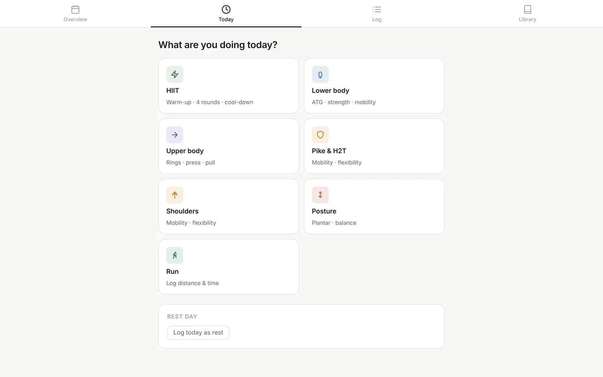
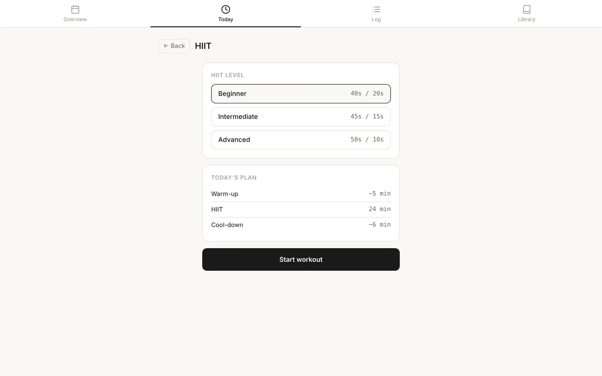
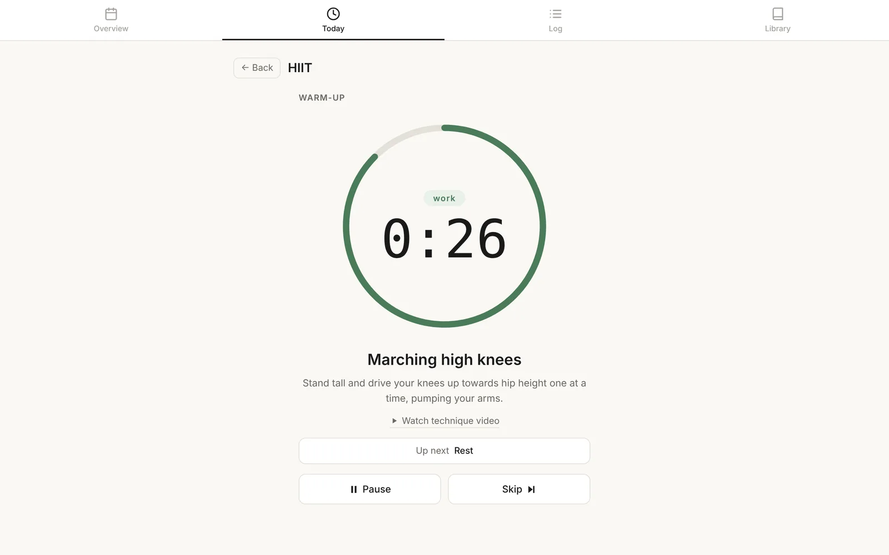
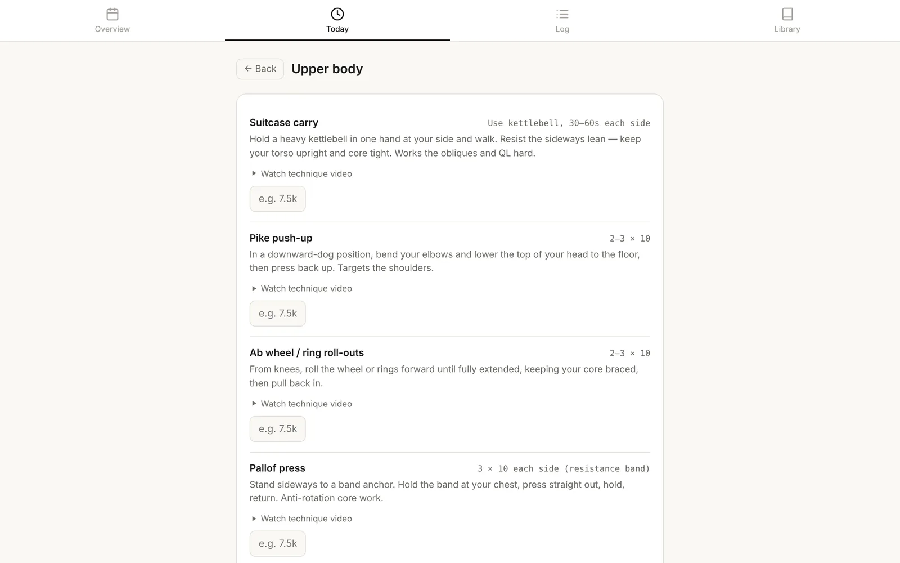
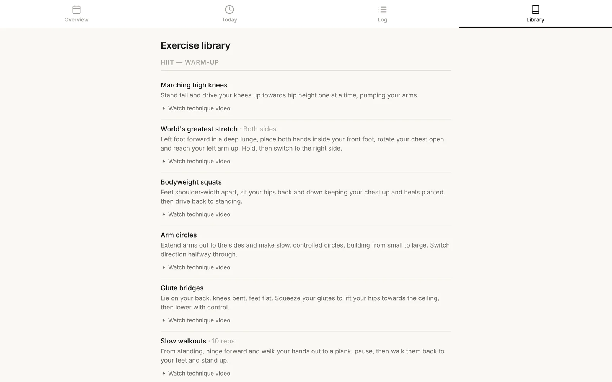

Build · Personal project
My training app: when a spreadsheet stops being enough
- User
- One: me
- Platform
- Browser, on my laptop
- Built with
- Claude
- Status
- In use, still iterating
The problem
For years I planned and logged my training in an Excel spreadsheet. It started simple, but my training didn't stay simple. HIIT, strength work with rings and kettlebells, mobility, posture work and running all needed tracking in different ways. The spreadsheet couldn't time an interval, play a technique video, or show me at a glance what I'd done that month.
The user
One person: me, training at home on my laptop. That sounds like a cheat, but it meant I could test every idea the next morning and know straight away whether it worked. It also meant being honest. If I stopped using a feature, it wasn't good enough.

Starting small
The first version was just a HIIT timer: warm-up, four rounds and a cool-down, at three levels (40 seconds on and 20 off, 45 and 15, and 50 and 10). It was the part of my training the spreadsheet handled worst, so it was the right place to start.


How it grew
Every new feature came from using the app, not from a list of ideas.
- Colour-coded intervals and audio cues, so I didn't have to keep looking at the screen mid-burpee.
- Technique videos linked to each exercise, drawn from a library I'd built up over years of research and YouTube.
- The screen stays on during a workout, so it doesn't go to sleep halfway through a round.
- It remembers what I lifted last time, so I know what to aim for.
- Separate sessions for lower body, upper body, mobility, shoulders, posture and running, each with the right fields to log.
- A calendar overview, colour-coded by session type, so I can see the balance of my training at a glance.


What I chose not to build
I thought about whether this should work for other people, and decided it shouldn't. The exercises are ones I chose for my own needs, not anyone else's. Opening it up would mean registration, logins and a proper way to store everyone's data, which is a lot of work for a problem nobody had asked me to solve.
I also only train at home, on my laptop. On holiday I either rest or do something simple. So there's no phone version and no syncing between devices. The app runs on my laptop, saves its data there, and can export a backup file. That's all it needs.
Building it with Claude
I don't write code any more, so building this was a conversation. I'd explain what I wanted and why, and Claude would often come back with questions or a few ways of doing it. We'd talk through the trade-offs, I'd pick one, and then I'd test it in a real workout.
Most features took several rounds. The HIIT timer went through a lot of versions: how the rounds were structured, how to show work, rest and warm-up so I could tell them apart from across the room, and when the audio cues should sound. If something felt wrong mid-session, I'd note it, describe it the next day, and we'd try again.
My job was deciding what was worth building, judging whether each version was right, and knowing when to stop.
Eventually I moved it to GitHub to give me version control. Every change is now saved with a short note about what changed, and if an experiment goes wrong I can roll back to a version that worked.
What changed
The spreadsheet is retired. Logging a workout is quicker, and comparing one week with the next is much easier. It can't stop me being lazy or too busy, but it removes the excuses that came from the tool itself.
Still iterating
It isn't finished, and I don't expect it to be. I keep adjusting exercises, sessions and the way progress is shown as my training changes.